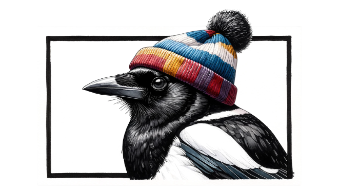
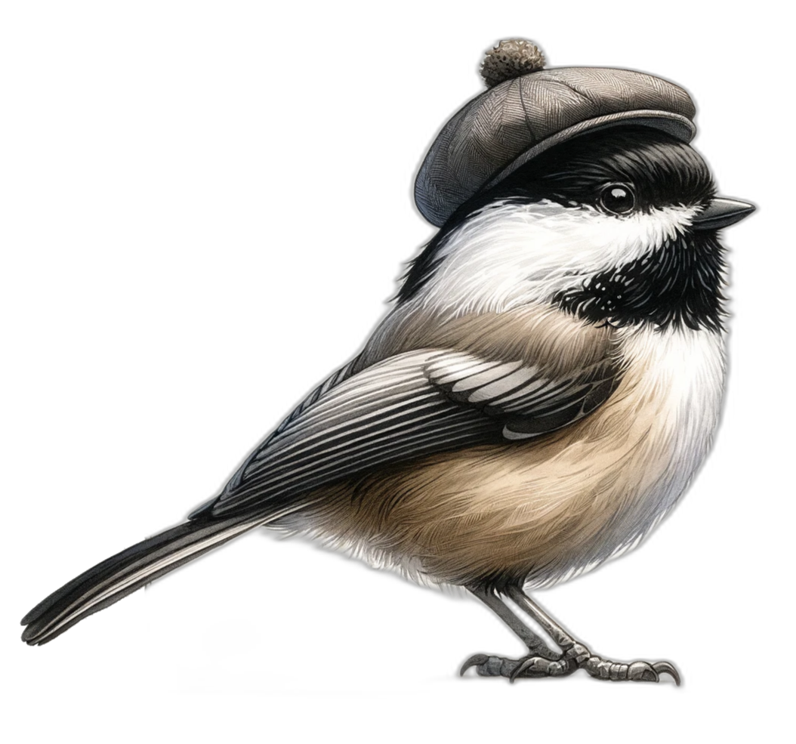
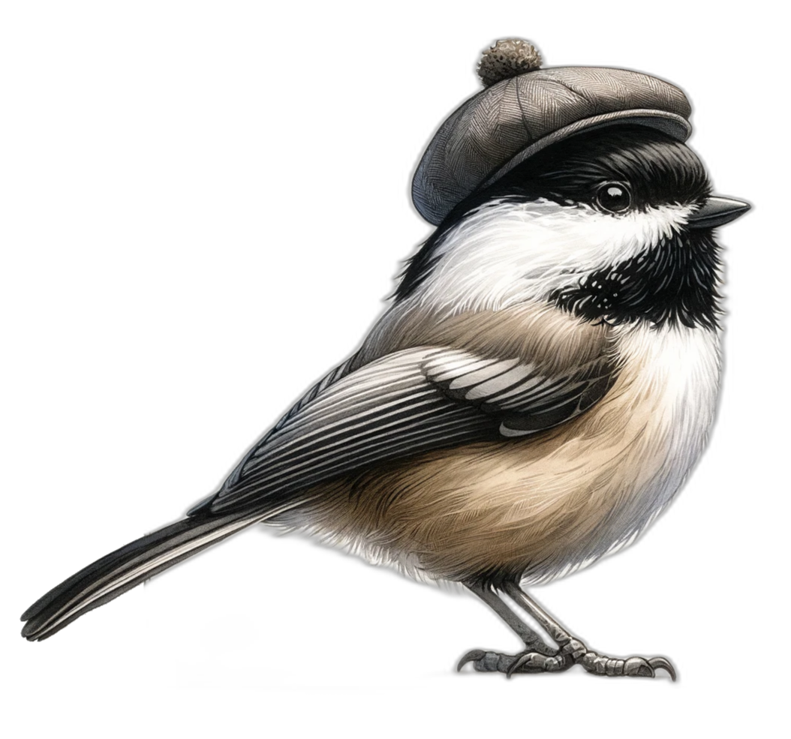
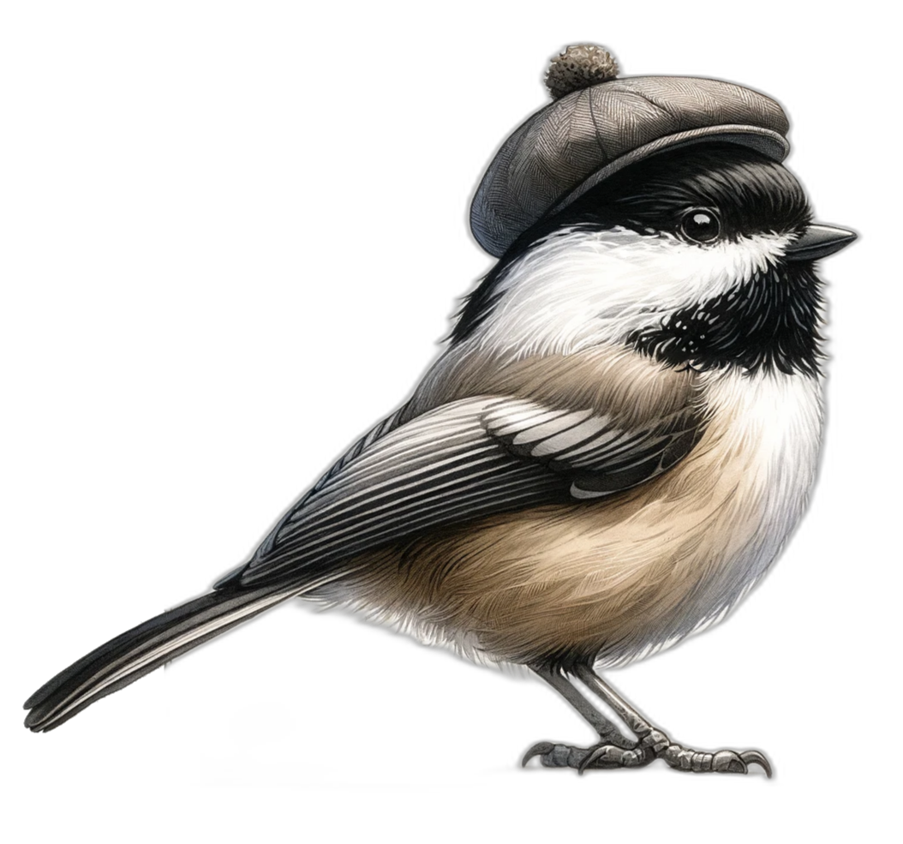

When Dalle-3 came out, I had a lot of fun with the model's ability to generate characters,
specifically birds with hats, against a white background.
Using this ability, I got GPT-4 to write code to remove the background and print a sticker sheet to
decorate my laptop.
AI tools empowered me to complete a project I would have otherwise never attempted.


Using AI tools
Defining Artificial Intelligence (AI)
AI encompasses the development of computer systems capable of performing tasks that traditionally
require human intelligence.
Task-Specific AI:
Designed for specialized tasks, demonstrating intelligence in a narrow domain.
Image recognition, speech recognition, and game-playing AI are examples of task-specific AI.
General AI (AGI):
Systems that excel across a wide range of tasks, potentially surpassing human capabilities.
AGI could learn and adapt to new situations without explicit programming.
Shifting Perception of AI
The definition of AI evolves as technology advances.
Tasks once considered uniquely human are now routinely performed by AI systems.
As AI capabilities expand, our understanding of what constitutes "true" intelligence also
shifts.
Machine Learning: Bridging Data and AI
Adaptability: Just like humans learn from experience, machine learning models
refine their accuracy as they process more data.
Generalization: Machine learning models can identify patterns in data and apply
them to new, unseen situations, similar to how we use past experiences to navigate new challenges.
Efficiency: Automating the learning process allows machine learning to tackle
complex problems that would be impractical to solve with traditional programming methods.
Three Types of Machine Learning
Supervised Learning:
Learning from labeled examples, like a teacher guiding a student.
The algorithm learns to map input data to the correct output labels.
Unsupervised Learning:
Discovering hidden patterns and structures in unlabeled data.
Similar to grouping similar objects together without prior knowledge of the categories.
Reinforcement Learning:
Learning through interaction with an environment, like a child learning from trial and error.
The algorithm receives rewards or penalties for its actions and learns to make better decisions
over time.
Neural Networks: The Building Blocks of Modern AI
What are Neural Networks?
Neural networks are a type of machine learning algorithm inspired by the human brain.
Consist of interconnected nodes (neurons) organized in layers
How do Neural Networks Learn?
Neurons receive inputs, process them, and pass outputs to the next layer
Connections between neurons have weights that determine the strength of the signal
Learning occurs by adjusting the weights to minimize prediction errors
Advantages of Neural Networks
Able to learn complex patterns and relationships in data
Can handle large amounts of data and make accurate predictions
A Concrete Example: Recognizing Cats and Dogs
Let's explore a practical application of neural networks: teaching a model to recognize images of
cats and dogs.
This example will demonstrate the key steps involved in training a neural network for image
classification.
By understanding this process, you'll gain insights into how AI systems learn from data and make
predictions.
Step 1: Collect and Label a Dataset
The first step is to gather a dataset of cat and dog images and label each image accordingly.
Labeling involves assigning the correct category ("cat" or "dog") to each image in the dataset.
Key Point: The quality and diversity of the dataset are crucial for the model's performance. The
dataset should include various breeds, angles, and backgrounds to ensure the model learns robust
features.
Cat
Dog
Cat
Dog
Cat
Dog
Cat
Dog
Cat
Dog
Step 2: Feed the Labeled Images into the Neural Network
The labeled images are then fed into the neural network for training.
The network processes the images and learns to extract relevant features that distinguish cats from
dogs.
Key Point: The neural network automatically learns hierarchical features from the raw pixel data.
Lower layers capture simple features like edges and textures, while higher layers learn more complex
and abstract features specific to cats and dogs.
Step 3: Adjusting Weights to Minimize Prediction Errors
During training, the network adjusts its internal weights to minimize the difference between
predicted and actual labels.
It learns to associate certain features with cats and others with dogs based on the labeled
examples.
Key Point: The learning process involves iteratively updating the weights through a technique called
backpropagation. By minimizing the prediction errors, the network gradually improves its ability to
classify cats and dogs accurately.
Step 4: Testing the Trained Network
After training, the network is tested on new, unseen cat and dog images to evaluate its performance.
The network uses its learned features to classify the new images as either cats or dogs.
Key Point: Testing on unseen data helps assess the network's ability to generalize beyond the
training examples. A well-trained model should be able to accurately classify new images it hasn't
encountered before.
Conclusion: Recognizing Cats and Dogs
Through this example, we've seen how a neural network can be trained to recognize cats and dogs in
images.
The network learns from labeled examples, extracts relevant features, and adjusts its weights to
make accurate predictions.
Key Takeaways:
AI systems learn from data by identifying patterns and relationships.
The quality and diversity of the training data significantly impact the model's performance.
Neural networks can automatically learn hierarchical features from raw data.
Generalization is a crucial aspect of AI, enabling models to make predictions on unseen
data.
From Image Classification to Generative AI
The principles of supervised learning, as demonstrated in the image classification example,
extend
to other domains and applications of AI.
Generative AI is an exciting area that focuses on creating new content, such as images, text, or
music, based on learned patterns from training data.
The success of generative AI relies on large-scale datasets, advanced model architectures, and
powerful computational resources.
Generative AI has the potential to revolutionize various industries, from creative applications
like
art and design to practical use cases like data augmentation and simulation, by enabling
machines to
generate novel content that mimics human creativity.
Large Language Model background
Introduction to Large Language Models (LLMs)
LLMs are powerful AI models designed for natural language processing tasks
They are built upon the concepts of neural networks and machine learning discussed earlier
LLMs have revolutionized the field of natural language processing and opened up new possibilities
The Building Blocks of LLMs
LLMs are based on the transformer architecture, which enables specific computer hardware to
massively speed computation.
Callback: The transformer architecture is a more advanced example of the neural networks discussed
previously.
architecture discussion
Self-attention is a key component that allows LLMs to capture long-range dependencies in text
The scalability of LLMs allows them to handle vast amounts of text data and learn from diverse
sources
How LLMs Generate Text
LLMs generate text by predicting the next word in a sequence based on the previous words
The process involves iteratively selecting the most probable next word until a stopping criterion is
met
Compressing the Internet
The parameters file of LLMs is like a compressed version of the vast information available on the
internet
Just as machine learning models learn from labeled datasets, LLMs learn from diverse online sources
to
capture a wide range of knowledge
A well-trained LLM becomes a model of the world, encapsulating not only language patterns but also
real-world knowledge and relationships
This process is analogous to how the cat and dog image classification model learns from a labeled
dataset to recognize patterns and make predictions
The Power of Attention Mechanism
Attention, a crucial component of neural networks, enables LLMs to focus on relevant parts of the
input
In the context of LLMs, attention allows the model to consider the context and generate more
coherent
and contextually relevant text
Example (no attention): "I went to the Calgary Stampede and met a nice [day]" (phone keyboard)
Example (w/ attention): "I went to the Calgary Stampede and met a nice [cowboy]." (GPT-3.5)
Text Completion and Contextual Understanding
LLMs excel at text completion tasks, generating contextually relevant continuations of given prompts
Example prompt: "I have a dog and I want to name him but I don't know what to name him. I want a
name that is not too common and not too weird."
Example completion: "List of dog name ideas: Rex, Spot, Buddy, Max, Charlie, Bailey, Molly, Daisy,
Lucy, Maggie, Rocky, Shadow, Toby, Bailey, Sadie, Molly, Maggie, Max, Charlie, Buddy, Jack"
LLMs demonstrate a deep understanding of context and can generate coherent and relevant completions
Beyond Completion: The Helpful Assistant
LLMs can be trained to take on the persona of a helpful assistant, providing valuable support and
guidance
Reinforcement learning techniques, similar to those discussed in the AI basics section, are used to
fine-tune LLM responses and optimize for helpfulness
Personal anecdote: I recently used an AI-powered writing assistant to help me draft a professional
email. The assistant provided suggestions on tone, grammar, and structure, saving me time and
ensuring a
polished final product.
LLMs as helpful assistants have potential applications in customer support, tutoring, and more
Balancing AI Safety and Usefulness
There is a trade-off between safety and usefulness in LLMs
Efforts to make LLMs safe and avoid harmful outputs can sometimes result in unnecessary refusals
Finding the right balance is crucial to maximize the benefits of LLMs while mitigating potential
risks
The Future of LLMs
As new high performance AI accelerator hardware is released, we can expect LLMs to become more
capable of
handling complex language tasks.
'Big tech' is scrambling to include LLMs into consumer products (ie. Microsoft Office)
With better LLMs creating 'autonomous agents' will become more viable, enabling LLMs to prompt
themselves to solve complex problems
The advancements in LLM technology could have significant impacts across various industries and
domains
LLM prompting
Introduction to LLM Prompting
LLM prompting is the art of crafting input prompts to elicit desired responses from LLMs
Effective prompting is crucial for unlocking the full potential of LLMs and achieving desired
outcomes
Prompting techniques can significantly influence the quality and relevance of LLM-generated text
Crafting Specific Prompts
Crafting specific and well-defined prompts is essential for guiding LLM behavior
Example of a specific prompt: "Write a short story about a magical adventure in a enchanted forest"
Tips for creating effective prompts:
Be clear and concise
Provide relevant context and constraints
Use appropriate language and terminology
Breaking Tasks into Steps
Breaking complex tasks into smaller, manageable steps can improve LLM performance and accuracy
Example of a multi-step prompt:
Generate a list of five potential book titles for a science fiction novel
Select the most intriguing title from the list
Write a brief synopsis of the novel based on the selected title
Breaking tasks into steps allows LLMs to focus on specific subtasks and generate more coherent
outputs
Iterative Refinement
Iterative refinement involves iterating on prompts based on LLM responses to improve results
The process typically involves:
Providing an initial prompt
Analyzing the LLM-generated response
Refining the prompt based on the observed strengths and weaknesses
Repeating the process until the desired output is achieved
Iterative refinement allows for fine-tuning prompts and optimizing LLM performance on specific tasks
Using Examples to Guide LLM Behavior
Providing relevant examples in prompts can help LLMs understand the desired output format or style
Example-based prompting:
Prompt: "Generate a product review in the style of the following example: [example review]"
LLM generates a review that mimics the style and structure of the provided example
Examples serve as a template or reference for LLMs to follow, improving the consistency and quality
of generated text
Advanced Prompting Techniques
Few-shot learning: Providing a small number of examples in the prompt to guide LLM behavior
Prompt chaining: Combining multiple prompts sequentially to perform complex tasks
Example of few-shot learning:
Prompt: "Translate the following sentences from English to French:
1. Hello, how are you? → Bonjour, comment allez-vous?
2. Thank you very much. → Merci beaucoup.
3. I love learning new languages.
Advanced prompting techniques can enhance LLM performance on specific tasks and domains
Prompting Best Practices and Guidelines
Key takeaways and best practices for effective LLM prompting:
Be clear, specific, and concise in your prompts
Provide relevant context and constraints
Break complex tasks into smaller, manageable steps
Use examples to guide LLM behavior
Iterate and refine prompts based on LLM responses
Experiment with different prompting techniques and share your experiences with the community
Continuously learn and adapt your prompting strategies as LLMs evolve and improve
Conclusion
Call to Action
Continue learning about generative AI and its potential
Use LLMs and diffusion models to enhance your work and creativity
Contribute to the responsible development and deployment of AI
Share your knowledge and engage in meaningful discussions

 
